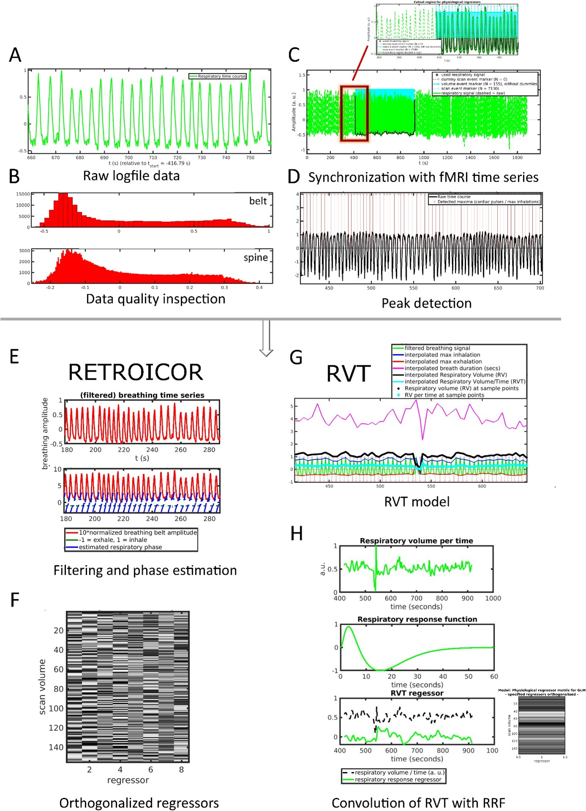

Creating physiology regressors using the PhysIO toolbox
Useful information to consider before and while doing a (f)MRI Study
How to use 3D Slicer to calcualte oriented bounding box
current procedure for 3d printing brains
Information about BIDS and OSF
Information about running an FSFAST analysis on Neurodesk
Information about using fMRIprep to preprocess fMRI data
How to run 7 Tesla anatomy analysis on neurodesk
information about various MNI spaces and templates
Information about running experiments in the MRI lab (before the new computer arrived!)